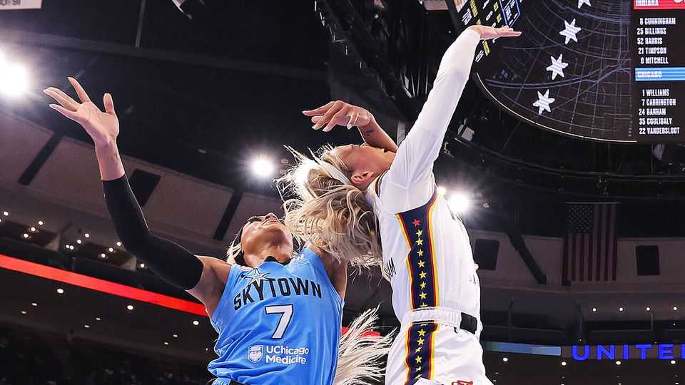

Why conservatives can’t stop talking about women’s basketball
The WNBA has become a culture-war battleground

Aug 20th 2026
The organisers of the Women’s National Basketball Association (WNBA) once begged journalists to cover it. The joke was that all you needed to attend a press conference was a camera and a question. Now it is standing room only. Much of that reflects the league’s surging popularity. But it has also become an unlikely battleground in America’s culture wars.
Lately the focus has been on Sophie Cunningham, a guard with the Indiana Fever whom some have dubbed “MAGA Barbie”. Ms Cunningham has not publicly identified as a Republican or a Democrat. But in an interview published last month she said transgender women should be barred from competing in women’s sports. Most Americans agree with her. Ahead of the midterms, though, the issue has become a fixation of right-wing politicians and commentators.
For proof look no further than Fox News, which generally pays little attention to women’s sports. Between June 25th and August 11th it devoted more than 200 segments to the WNBA; at least 130 of them on trans athletes, according to Media Matters, a left-leaning watchdog. The coverage has been so relentless that one of the network’s biggest personalities, Jesse Watters, complained on air: “This is ridiculous.”
When, on August 8th, Ms Cunningham was aggressively fouled by an opposing player, DiJonai Carrington, some conservatives cast it as retaliation for her views. Florida’s attorney-general, a Republican, implied that had the game been played in his state, he might have charged Ms Carrington with assault and battery.
The foul (pictured) brought another element of this saga into sharper focus: race. Ms Cunningham is white; after the game Ms Carrington, who is black, posted on social media “WHITE PRIVILEGE @indianafever”. She has not explained what she meant. But Caitlin Clark, another white Fever player and the league’s biggest star, has also become a MAGA cause célèbre. Last month 11 Republican lawmakers wrote to the WNBA complaining that Ms Clark was being pushed around on the court. They cited reports that this “may be racially motivated”. Donald Trump agreed that Ms Clark had been “treated rather rough”.
The league, for its part, has not always handled things well, at times asking fans to cover up shirts about trans athletes before reversing course. But it has also pointed out the absurdity of some of the coverage. There are no trans athletes in the WNBA. Two former NBA players and supporters of Mr Trump claim to want to join; the league calls their efforts a “publicity stunt”.
Why are Republicans pushing these buttons now? As the midterms approach, voters are focused on affordability, a problem for the party in charge. Race and trans issues offer more promising terrain on which to portray Democrats as out of touch. In June conservatives won a victory at the Supreme Court, which ruled that states could bar transgender women from competing in women’s sports.
Meanwhile, the WNBA’s attendance and viewership are booming. “Our focus is on basketball,” said Ms Clark recently. She is on a historic run, breaking records. That seems worthy of attention, too. ■
Stay on top of American politics with The US in brief, our daily newsletter with fast analysis of the most important political news, and Checks and Balance, a weekly note that examines the state of American democracy and the issues that matter to voters.